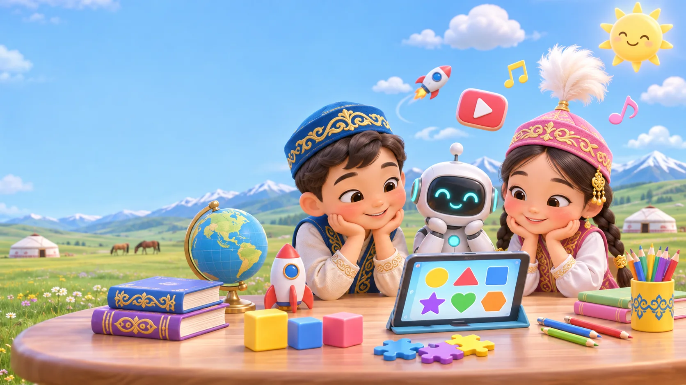

БАЛДӘУРЕННІҢ
ЦИФРЛЫҚ ӘЛЕМІ
Интерактивті құрал

Әр баланың қызығушылығын оятып,
әр тәрбиешінің шығармашылығына жол ашатын кеңістік!
әр тәрбиешінің шығармашылығына жол ашатын кеңістік!
Әр бетте — жаңа ашылым ✨
📖 Кітапты ашу үшін мұқабаны бас